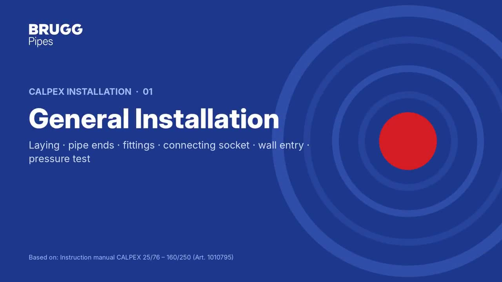
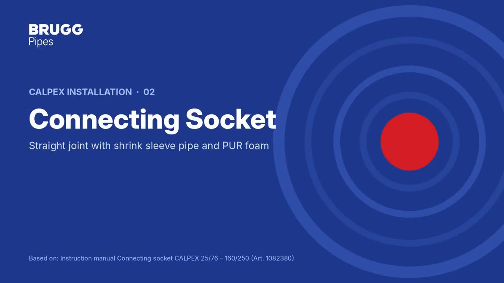

CALPEX family
Four pipe series, general installation and ten accessories.

1
CALPEX PUR-KING UNO, SDR 9
Single pipe, ASTM- ¾" to 2", ASTM F876 / F877, NSF 61
- 8 types
- 203 °F (95 °C) maximum
2
CALPEX PUR-KING DUO, SDR 9
Twin pipe, ASTM- 2 × ¾" to 2 × 2", ASTM F876 / F877, NSF 61
- 5 types
- 203 °F (95 °C) maximum
3
CALPEX PUR-KING UNO, SDR 11
Single pipe, metric- 25 to 140 mm carrier pipe
- 10 types
- 203 °F (95 °C) maximum
4
CALPEX PUR-KING DUO, SDR 11
Twin pipe, metric- 2 × 25 to 2 × 63 mm carrier pipe
- 5 types
- 203 °F (95 °C) maximum

5
General installation
Video and manual- Laying, pipe ends, fittings
- Wall entry, pressure test
- 9:42 min

6
Accessories and tools
10 items- Connecting socket, shells, chamber
- Laying, unwinding, press and squeeze-off tools
- One video and one manual each
Single pipe, ASTM
CALPEX PUR-KING UNO, SDR 9
8 types. PEX-a carrier pipe with EVOH oxygen barrier, polyurethane foam and corrugated LLD-PE jacket in one bonded piece.
- Range¾" to 2", ASTM F876 / F877, NSF 61
- Maximum operating temperature203 °F (95 °C)
- Pressure160 psi at 73.4 °F, 100 psi at 180 °F, 80 psi at 200 °F
- Thermal expansionSelf-compensating
| Type | Carrier OD | Carrier ID | Jacket OD | Min. bending radius | Weight | Standard coil |
|---|---|---|---|---|---|---|
| 0.75"/3.07" | 0.875 in (22.22 mm) | 0.680 in (17.28 mm) | 3.07 in (78 mm) | 1.5 ft (0.45 m) | 0.6 lb/ft (0.9 kg/m) | 2,300 ft (701 m) |
| 1.00"/3.07" | 1.125 in (28.58 mm) | 0.875 in (22.22 mm) | 3.07 in (78 mm) | 1.7 ft (0.50 m) | 0.7 lb/ft (1.0 kg/m) | 2,300 ft (701 m) |
| 1.25"/3.07" | 1.375 in (34.92 mm) | 1.069 in (27.16 mm) | 3.07 in (78 mm) | 1.9 ft (0.55 m) | 0.7 lb/ft (1.1 kg/m) | 2,300 ft (701 m) |
| 1.00"/3.66" | 1.125 in (28.58 mm) | 0.875 in (22.22 mm) | 3.66 in (93 mm) | 2.3 ft (0.70 m) | 0.8 lb/ft (1.3 kg/m) | 1,400 ft (427 m) |
| 1.25"/3.66" | 1.375 in (34.92 mm) | 1.069 in (27.16 mm) | 3.66 in (93 mm) | 2.3 ft (0.70 m) | 0.9 lb/ft (1.3 kg/m) | 1,400 ft (427 m) |
| 1.50"/3.66" | 1.625 in (41.28 mm) | 1.264 in (32.10 mm) | 3.66 in (93 mm) | 1.9 ft (0.55 m) | 1.0 lb/ft (1.5 kg/m) | 1,400 ft (427 m) |
| 1.50"/4.45" | 1.625 in (41.28 mm) | 1.264 in (32.10 mm) | 4.45 in (113 mm) | 2.5 ft (0.75 m) | 1.3 lb/ft (1.9 kg/m) | 985 ft (300 m) |
| 2.00"/4.45" | 2.125 in (53.98 mm) | 1.653 in (41.98 mm) | 4.45 in (113 mm) | 2.0 ft (0.60 m) | 1.5 lb/ft (2.2 kg/m) | 985 ft (300 m) |
* Not made in the USA. SDR 11 pipes are not for potable water. Coil length can vary by ±5 %. Values from the CALPEX PUR-KING Technical Data Sheet, November 16, 2026.
Twin pipe, ASTM
CALPEX PUR-KING DUO, SDR 9
5 types. PEX-a carrier pipe with EVOH oxygen barrier, polyurethane foam and corrugated LLD-PE jacket in one bonded piece.
- Range2 × ¾" to 2 × 2", ASTM F876 / F877, NSF 61
- Maximum operating temperature203 °F (95 °C)
- Pressure160 psi at 73.4 °F, 100 psi at 180 °F, 80 psi at 200 °F
- Thermal expansionSelf-compensating
| Type | Carrier OD, each | Carrier ID | Jacket OD | Min. bending radius | Weight | Standard coil |
|---|---|---|---|---|---|---|
| 2x0.75"/3.66" | 0.875 in (22.22 mm) | 0.680 in (17.28 mm) | 3.66 in (93 mm) | 1.9 ft (0.55 m) | 0.9 lb/ft (1.3 kg/m) | 1,400 ft (427 m) |
| 2x1.00"/4.45" | 1.125 in (28.58 mm) | 0.875 in (22.22 mm) | 4.45 in (113 mm) | 2.5 ft (0.75 m) | 1.3 lb/ft (1.9 kg/m) | 985 ft (300 m) |
| 2x1.25"/5.03" | 1.375 in (34.92 mm) | 1.069 in (27.16 mm) | 5.03 in (128 mm) | 2.7 ft (0.80 m) | 1.7 lb/ft (2.5 kg/m) | 700 ft (213 m) |
| 2x1.50"/6.42" | 1.625 in (41.28 mm) | 1.264 in (32.10 mm) | 6.42 in (163 mm) | 3.7 ft (1.10 m) | 2.6 lb/ft (3.9 kg/m) | 300 ft (91 m) |
| 2x2.00"/7.20" | 2.125 in (53.98 mm) | 1.653 in (41.98 mm) | 7.20 in (183 mm) | 4.3 ft (1.30 m) | 3.4 lb/ft (5.1 kg/m) | 120 ft (37 m) |
* Not made in the USA. SDR 11 pipes are not for potable water. Coil length can vary by ±5 %. Values from the CALPEX PUR-KING Technical Data Sheet, November 16, 2026.
Single pipe, metric
CALPEX PUR-KING UNO, SDR 11
10 types. PEX-a carrier pipe with EVOH oxygen barrier, polyurethane foam and corrugated LLD-PE jacket in one bonded piece.
- Range25 to 140 mm carrier pipe
- Maximum operating temperature203 °F (95 °C)
- Pressure125 psi at 73 °F, 80 psi at 180 °F, 65 psi at 200 °F
- Thermal expansionSelf-compensating
| Type | Carrier OD | Carrier ID | Jacket OD | Min. bending radius | Weight | Standard coil |
|---|---|---|---|---|---|---|
| 25/76 | 0.99 in (25.20 mm) | 0.81 in (20.60 mm) | 3.07 in (78 mm) | 1.5 ft (0.45 m) | 0.6 lb/ft (0.9 kg/m) | 2,300 ft (701 m) |
| 32/76 | 1.27 in (32.20 mm) | 1.04 in (26.40 mm) | 3.07 in (78 mm) | 1.7 ft (0.50 m) | 0.7 lb/ft (1.0 kg/m) | 2,300 ft (701 m) |
| 40/91 | 1.58 in (40.20 mm) | 1.29 in (32.80 mm) | 3.66 in (93 mm) | 1.9 ft (0.55 m) | 0.9 lb/ft (1.4 kg/m) | 1,400 ft (427 m) |
| 50/111 | 1.98 in (50.30 mm) | 1.62 in (41.10 mm) | 4.45 in (113 mm) | 2.0 ft (0.60 m) | 1.3 lb/ft (2.0 kg/m) | 985 ft (300 m) |
| 63/126 | 2.49 in (63.30 mm) | 2.04 in (51.70 mm) | 5.03 in (128 mm) | 2.2 ft (0.65 m) | 1.7 lb/ft (2.6 kg/m) | 700 ft (213 m) |
| 75/142 | 2.97 in (75.40 mm) | 2.43 in (61.80 mm) | 5.63 in (143 mm) | 2.3 ft (0.70 m) | 2.3 lb/ft (3.4 kg/m) | 350 ft (107 m) |
| 90/162 | 3.56 in (90.50 mm) | 2.92 in (74.10 mm) | 6.42 in (163 mm) | 3.3 ft (1.00 m) | 3.1 lb/ft (4.6 kg/m) | 300 ft (91 m) |
| 110/162 | 4.35 in (110.50 mm) | 3.56 in (90.50 mm) | 6.42 in (163 mm) | 3.7 ft (1.10 m) | 3.8 lb/ft (5.7 kg/m) | 300 ft (91 m) |
| 125/182* | 4.94 in (125.60 mm) | 4.05 in (102.80 mm) | 7.20 in (183 mm) | 4.3 ft (1.30 m) | 4.8 lb/ft (7.2 kg/m) | 120 ft (37 m) |
| 140/202* | 5.54 in (140.70 mm) | 4.54 in (115.30 mm) | 7.95 in (202 mm) | 4.6 ft (1.40 m) | 5.6 lb/ft (8.4 kg/m) | 115 ft (35 m) |
* Not made in the USA. SDR 11 pipes are not for potable water. Coil length can vary by ±5 %. Values from the CALPEX PUR-KING Technical Data Sheet, November 16, 2026.
Twin pipe, metric
CALPEX PUR-KING DUO, SDR 11
5 types. PEX-a carrier pipe with EVOH oxygen barrier, polyurethane foam and corrugated LLD-PE jacket in one bonded piece.
- Range2 × 25 to 2 × 63 mm carrier pipe
- Maximum operating temperature203 °F (95 °C)
- Pressure125 psi at 73 °F, 80 psi at 180 °F, 65 psi at 200 °F
- Thermal expansionSelf-compensating
| Type | Carrier OD, each | Carrier ID | Jacket OD | Min. bending radius | Weight | Standard coil |
|---|---|---|---|---|---|---|
| 25+25/91 | 0.99 in (25.20 mm) | 0.81 in (20.60 mm) | 3.66 in (93 mm) | 1.9 ft (0.55 m) | 0.9 lb/ft (1.3 kg/m) | 1,400 ft (427 m) |
| 32+32/111 | 1.27 in (32.20 mm) | 1.04 in (26.40 mm) | 4.45 in (113 mm) | 2.0 ft (0.60 m) | 1.3 lb/ft (1.9 kg/m) | 985 ft (300 m) |
| 40+40/126 | 1.58 in (40.20 mm) | 1.29 in (32.80 mm) | 5.03 in (128 mm) | 2.2 ft (0.65 m) | 1.7 lb/ft (2.5 kg/m) | 700 ft (213 m) |
| 50+50/162 | 1.98 in (50.30 mm) | 1.62 in (41.10 mm) | 6.42 in (163 mm) | 3.7 ft (1.10 m) | 2.7 lb/ft (4.0 kg/m) | 300 ft (91 m) |
| 63+63/182 | 2.49 in (63.30 mm) | 2.04 in (51.70 mm) | 7.20 in (183 mm) | 4.0 ft (1.20 m) | 3.6 lb/ft (5.3 kg/m) | 120 ft (37 m) |
* Not made in the USA. SDR 11 pipes are not for potable water. Coil length can vary by ±5 %. Values from the CALPEX PUR-KING Technical Data Sheet, November 16, 2026.
Video and manual
General installation
Laying, pipe ends, fittings, connecting socket, wall entry and pressure test. Installation is done by trained personnel; BRUGG offers training on site or online.
- Installation video9:42 min
- Installation Manual11 pages
Accessories and tools
Joints, shells, chamber and tools
Ten accessories and tools for CALPEX, each with a narrated step-by-step video and its own installation manual.
- Items10
- Per item1 video, 1 installation manual (PDF)
Connecting Socket · 3:22 min

T-, I- and L-Shell 76-126 mm
Clip shell for T-joints, straight joints and elbows · 2:57 min

Big T-, I- and L-Shell 76-202 mm
Clip shell for larger T-joints, straight joints and elbows · 2:41 min


Contact
Send us your route. We size it and price it.
BRUGG Pipes supports your project with pressure-loss and heat-loss sizing, routing and installer training.